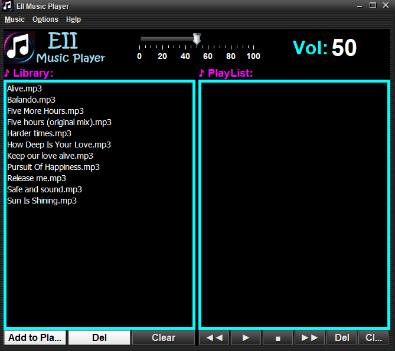

EII Music Player
EII Music Player es un reproductor de archivos MP3 que permite acceder a las unidades de
almacenamiento del ordenador para añadir archivos musicales a la librería. De esta librería,
se podrán pasar las canciones que se desee a la lista de reproducción

Las opciones del reproductor son las siguientes:
- Play: reproduce la canción seleccionada o la primera canción de la lista de reproducción
- Stop: finaliza la reproducción de una canción
- Rewind: reproduce la canción previa a la seleccionada
- Forward: reproduce la canción posterior a la seleccionada
- Del: elimina la canción seleccionada
- Clear: elimina toda la lista de canciones
- Random: reproduce una canción aleatoria de la lista